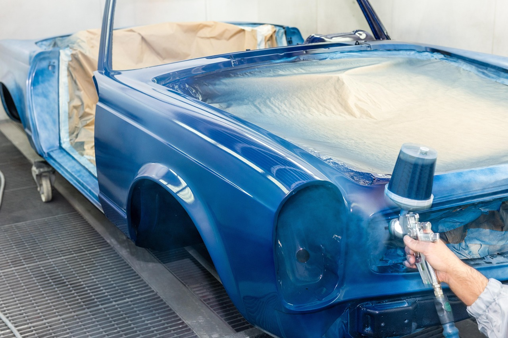
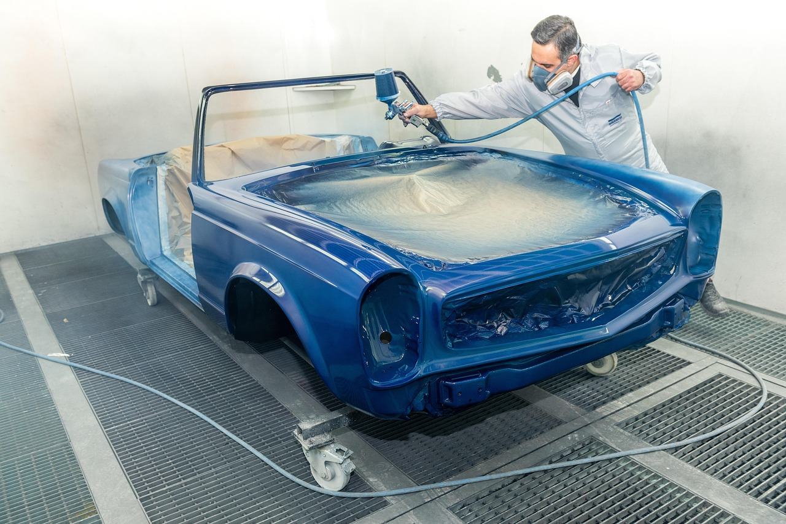
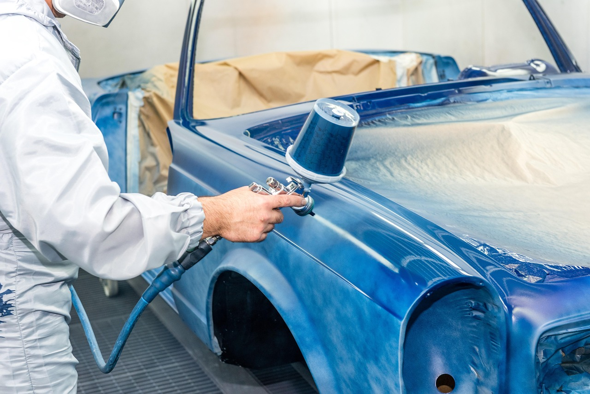
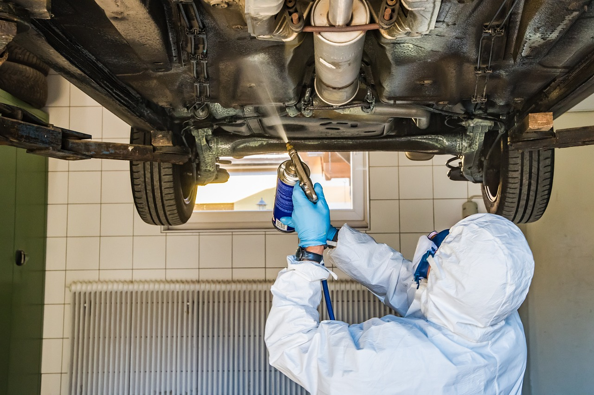

Reparații motor
Reparații pentru motoarele autoturismelor
Servicii auto, simplu și corect
Rezolvăm rapid problemele motorului și oferim vopsitorie auto.

Reparații de motor și vopsitorie auto.
La Drift Serv, ne ocupăm cu reparații de motor și vopsitorie pentru autoturisme, indiferent de marcă. Suntem aici să readucem mașina ta pe șosea, în condiții bune. Echipa noastră oferă soluții eficiente pentru fiecare client.
Reparații pentru motoarele autoturismelor
Vopsitorie pentru caroserie și elemente auto
Timp scurt de intervenție
Atenție la fiecare detaliu
Fără costuri ascunse


